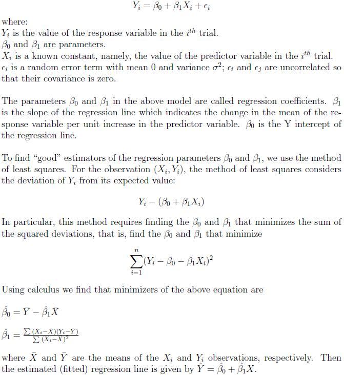
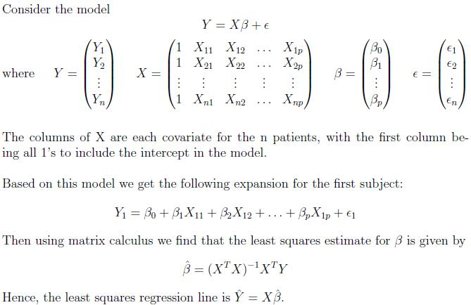
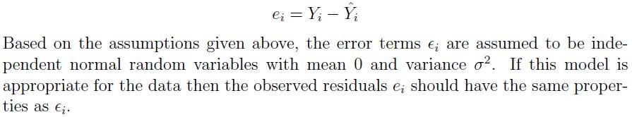
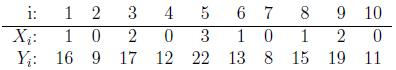
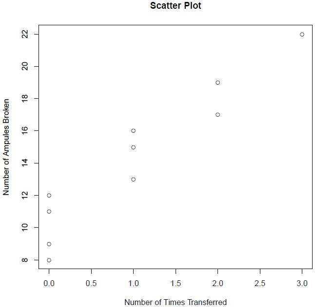
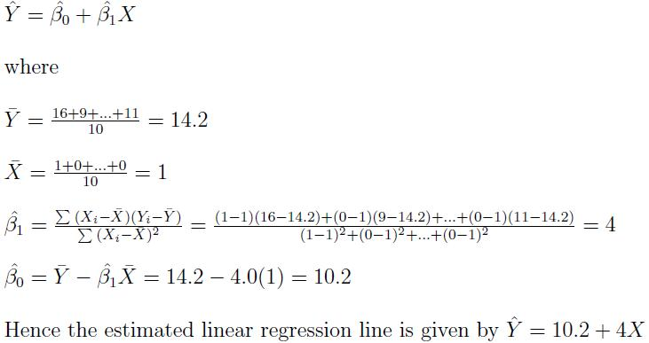
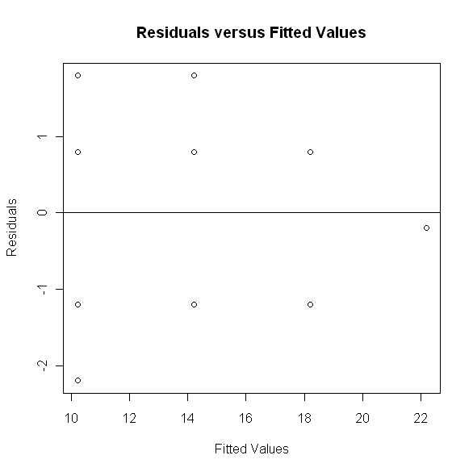
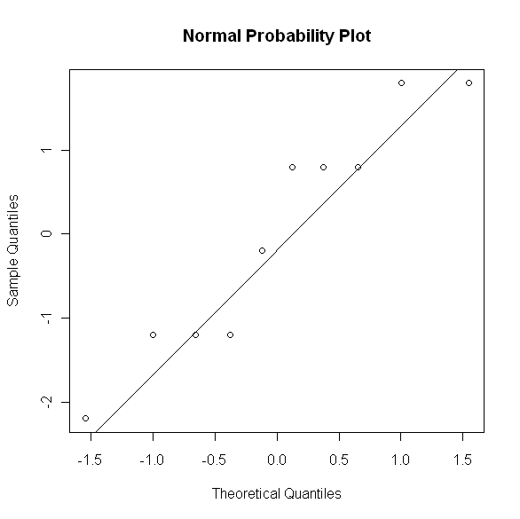

Linear Regression
Lead Author(s): Erin Dienes
Definition of Linear Regression
Regression analysis is a statistical methodology that utilizes the relationship between two or more quantitative variables so that a response (outcome) variable can be predicted from the other(s). For example, we may wish to predict the length of hospital stay of a surgical patient by utilizing the relationship between the time in the hospital and the severity of the operation. Only a limited number of explanatory/predictor/covariate variables can or should be included in a regression model. Thus a central problem is choosing a "good" set of predictor variables in some sense. Some considerations in making this choice are
- How much does a chosen variable contribute to reducing the remaining variation in Y after allowance is made for the contributions of other predictor variables that have been included in the model.
- The importance of the variable as a causal agen in the process under analysis.
- The degree to which observations on the variable can be obtained more accurately, or quickly, or economically than on other variables.
- The degree to which the variable can be controlled.
In linear regression, the term "linear" refers to the model being linear in the parameters, meaning no parameter appears as an exponent or is multiplied or divided by another parameter. It does NOT mean that the model is necessarily linear in the covariate. For example, we may believe that the relationship between the response variable and a single covariate is actually quadratic in nature. If we model this quadratic trend we would still call this linear regression.
Simple Linear Regression
Simple linear regression is a regression analysis between a response variable and a single covariate. The model can be stated as follows:

Multiple Linear Regression
Multiple linear regression is a regression analysis between a response variable and several covariate variables. In order to find the least squares estimates in this situation we need to define the model using matrix notation.

Model Assumptions
- The mean of the probability distribution of the error term is 0.
- The variance of the probability distribution of the error term is constant for all values of the predictor X.
- The probability distribution of the error term is normal.
- The values of the error term associated with any two observed values of y are independent. That is, the value of the error term associated with one value of Y has no effect on any of the values of the error associated with any other Y value.
Model Diagnostics
As seen above there are certain assumptions we make about the properties and underlying distribution of the population that the data is sampled from. Since we cannot be certain that these assumptions are met we use model diagnostics to confirm the validity of using a simple linear regression model for our data. Typically we calculate residuals in order to validate our assumptions. The residual is defined as the difference between the observed value of the response and the fitted value of the response. That is,

First we want to determine whether or not a linear regression function is appropriate for the data being analyzed. This assumption can be studied from a plot of the residuals (y axis) versus the predictor variable (x axis) or, equivalently, from a plot of the residuals versus the fitted values. When we plot the residuals versus the predictor variable we are looking for an even spread around the line Y = 0, this would satisfy the assumption that mean of the error terms is 0. In the same plot if the residuals appear to have an even spread around the line Y = 0 then this would indicate a constant variance which would satisfy another of our assumptions. Lastly, if the residuals fall along the line in a normal probability plot then this would validate our assumption of normality.
Example
A substance used in biological and medical research is shipped by airfreight to users in cartons of 1,000 ampules. The data below, involving 10 shipments, were collected on the number of times the carton was transferred from one aircraft to another over the shipment route (X) and the number of ampules found to be broken upon arrival (Y).

The goal is to estimate the regression function based on the above data. In order to determine the type of relationship between X and Y we should first look at a scatter plot. Consider the following plot:

From the above plot we see that there appears to be an upward sloping linear trend between the number of times the carton was transferred and the number of ampules that were broken. Hence to obtain the estimated regression function, we will use a simple linear regression model of the form:

To interpret this model we say that as number of times the cartons are transfered from one aircraft to another increases by 1, on average the number of ampules broken increases by 4. Also if the cartons are never transfered to a different aircraft we can estimate that approximately 10 ampules will be broken.
Next we want to check the model assumptions in order to verify the above interpretation of the model. Let's first consider a plot of the residual values versus the fitted values, given below.

From the above plot we can see that the residuals seem to be evenly clustered around zero and the spread of the residuals appears to be constant. In order to be more confident in this conclusion we would prefer to have more data observations, however based on the scatter plot and the above residual plot it appears that a simple linear model is a good fit for this particular applications. Next let's consider a normal probability plot of the residuals.

Since the points appear to follow the line in the normal probability plot we can conclude that our assumption of normality is reasonable.
-- ErinEsp - 30 Apr 2010